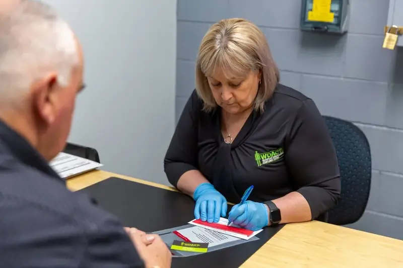

Horsham and the Wimmera, Victoria
Drug and alcohol testing that comes to your workplace
Oral fluid, urine and hair follicle testing for businesses and individuals. Accurate, confidential and fully insured.

The tests we run
We test on site, with independent laboratory analysis when a result needs confirming.
-
Oral fluid
The Accurate Oral Fluid 9-Panel test. A quick saliva swab that screens for nine drug groups on the spot.
-
Urine
The Accurate One Step Urine Cup. Rapid on-site results, including synthetic cannabis, fentanyl, oxycodone and other opioids.
-
Hair follicle
Hair testing shows drug and alcohol use over a longer period. Often needed for legal aid and court orders.
Who we test for
Employers
- Onsite workplace testing, kept quick so your crew is back at work sooner
- Roadside testing for drivers and operators
- Advice on setting up drug and alcohol testing that suits your business
Testing helps you lower the risk of accidents and downtime, and shows your team you take safety seriously.
Individuals
- Hair follicle testing for legal aid and court orders
- Confidential, discreet appointments
Tell us what you need tested and who the results go to, and we will arrange the rest.
Why businesses choose WDACT
- Qualified testers
- Our team is trained and certified to collect samples and give accurate, reliable results.
- Confidential and discreet
- Every test is handled privately, protecting your staff and your business.
- Fully insured
- All our services are fully insured.
- Local to the Wimmera
- Based in Horsham, we come to worksites across the region.
- Hours
- Monday to Friday, 9 am to 5 pm
- Postal address
- PO Box 1080, Horsham VIC 3400